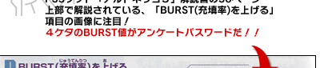

|
||
 |
||
|  | ||
| ◆応募方法◆ |
| アンケートパスワードは「アルトネリコ３～世界終焉の引鉄は少女の詩が弾く～」解説書の３６ページ上部で解説されている『BURST(充填率)をあげる』項目の画像に注目。４ケタのBURST値がアンケートパスワードです。（４ケタの数字） パスワードが判りましたら、当サイトページ下記に入力、又は直接アンケートページ（http://www.salburg.com/enq/enq.php）からアンケートにお答え下さい。 |
| ※アルトネリコシリーズの『濃い』アンケートにお答えいただくには『ザールブルグ市民ID』が必要になります。 |
| 【ザールブルグ市民ID新規ご登録はこちら】 |
| アンケートパスワード・ザールブルグ市民IDフォーム |
| ©GUST CO.,LTD. ©NBGI |